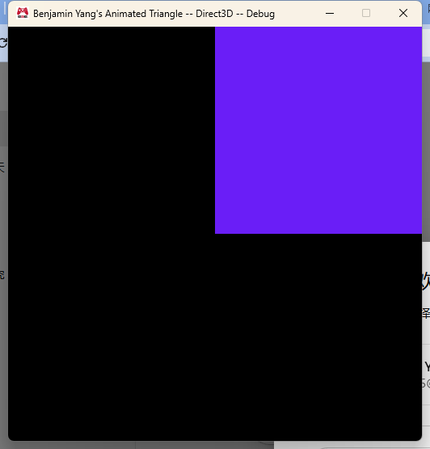
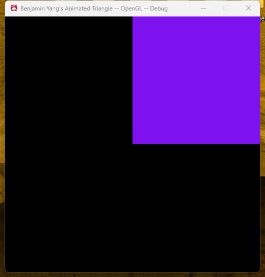
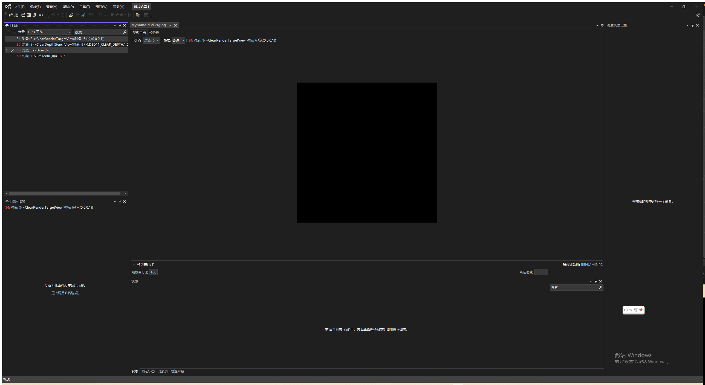
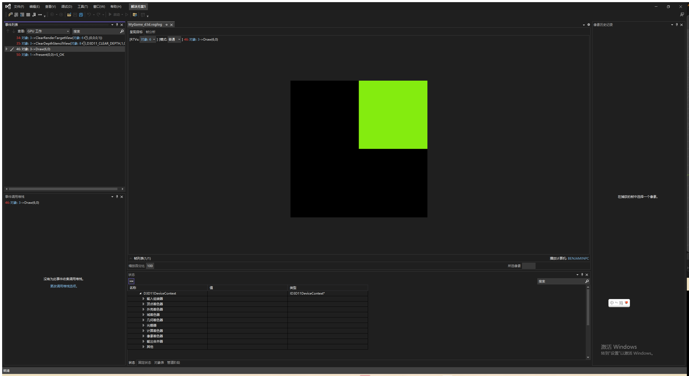
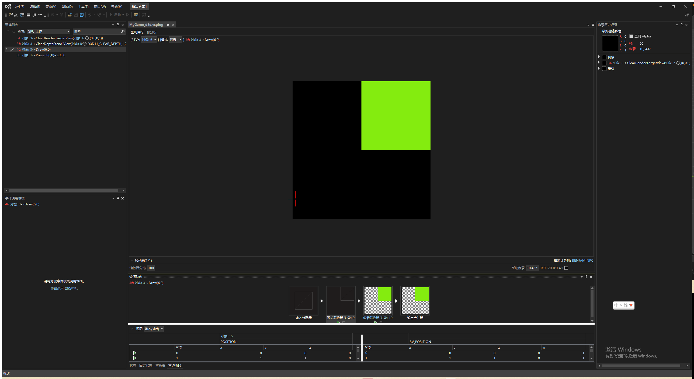
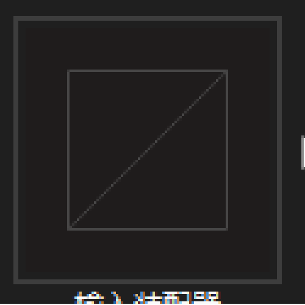
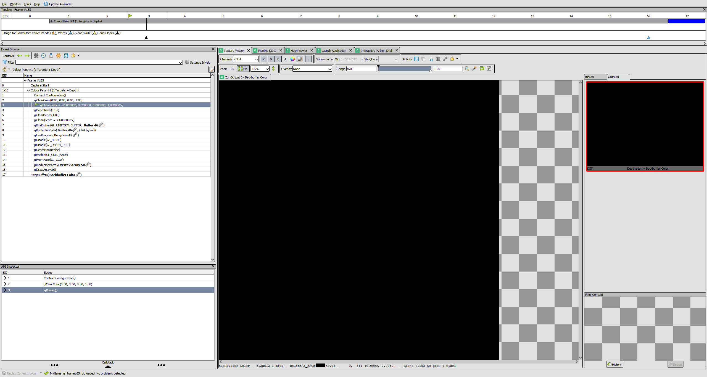
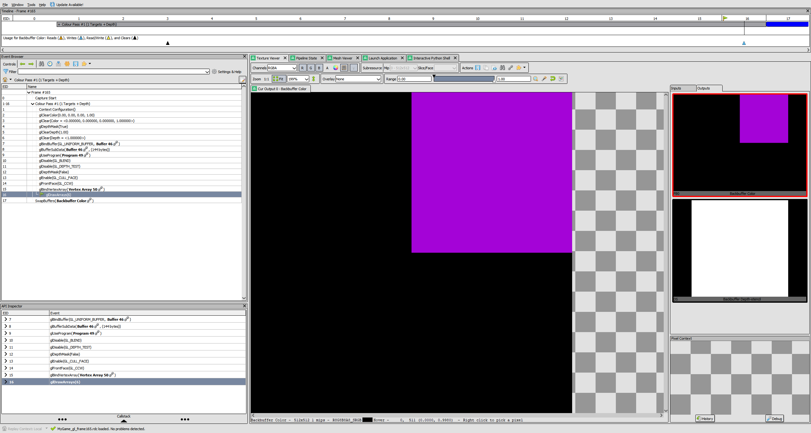
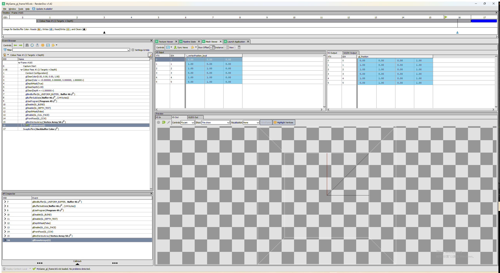

Assignment 02
Mesh and effect representations, and a rectangle instead of a triangle
MyGame.exe. ESC closes the game.
What I did
I pulled the "Geometry Data" and "Shading Data" out of Graphics.d3d.cpp / Graphics.gl.cpp into two classes in the Graphics project:
cMesh (cMesh.h, cMesh.cpp, Direct3D/cMesh.d3d.cpp, OpenGL/cMesh.gl.cpp). It owns the vertex buffer (plus the cVertexFormat on D3D, or the vertex array object on OpenGL) and a vertex count. The interface is Initialize( vertexData, vertexCount ), CleanUp() and Draw(). Almost all of it is platform-specific, the shared .cpp only has the destructor that asserts CleanUp() was called.
cEffect (cEffect.h, cEffect.cpp, Direct3D/cEffect.d3d.cpp, OpenGL/cEffect.gl.cpp). It owns the vertex shader, the fragment shader, the cRenderState and, on OpenGL only, the program id. The interface is Initialize( vertexShaderPath, fragmentShaderPath, renderStateBits ), CleanUp() and Bind(). Here a good part is shared: loading the two shaders and initializing the render state is the same on both platforms, and so is releasing the shaders and binding the render state. cEffect.cpp does all of that and calls three small private functions that the platform files implement: InitializePlatformSpecific() (OpenGL creates and links the program, D3D does nothing), CleanUpPlatformSpecific() (OpenGL deletes the program) and BindShaders() (VSSetShader/PSSetShader vs glUseProgram).
I did it the way the assignment suggested: move the code first, get it running, commit, then clean up. The static s_vertexBuffer, s_vertexShader, s_programId and so on in the Graphics files are gone; there is now just one cMesh s_mesh and one cEffect s_effect.
For the second triangle I changed the vertex count to 6 and added three more vertices so the two triangles make the square from (0,0) to (1,1), which is the upper-right quarter of the screen. For the winding order I did not want to keep two different vertex arrays, so the vertex data in Graphics.[platform].cpp is always written counter-clockwise (the OpenGL / right-handed order) and cMesh.d3d.cpp swaps the second and third vertex of every triangle when it copies the data into the Direct3D buffer. That way the code that creates the mesh is the same in both files and does not have to know about winding order at all. I checked with back-face culling on that both triangles show up on both platforms, so the order is right.
Screenshots


Direct3D capture (Visual Studio Graphics Analyzer)




OpenGL capture (RenderDoc)



The code that binds the effect and draws the mesh
This is the render part of RenderFrame() in Graphics.d3d.cpp. Graphics.gl.cpp has exactly the same lines.
// Bind the shading data
{
s_effect.Bind();
}
// Draw the geometry
{
s_mesh.Draw();
}Initialization is also identical in both files:
return s_effect.Initialize( "data/Shaders/Vertex/standard.shader", "data/Shaders/Fragment/animatedColor.shader", renderStateBits );
...
return s_mesh.Initialize( vertexData, vertexCount );What is still different between Graphics.d3d.cpp and Graphics.gl.cpp
After this assignment the two files are almost the same. Submission, the event handling, the frame constant buffer update, the geometry and shading initialization and the clean up are identical. What is left:
- Clearing the back buffer and depth buffer. D3D calls ClearRenderTargetView / ClearDepthStencilView on views it owns; OpenGL calls glClearColor / glClear and glDepthMask / glClearDepth / glClear.
- Presenting the frame. D3D calls
swapChain->Present(), OpenGL callsSwapBuffers( deviceContext ). - The render target and depth stencil views. Only the D3D file has
s_renderTargetView/s_depthStencilView,InitializeViews()and the code that releases them. OpenGL gets its default framebuffer from the context, so there is nothing to create. - Includes. Small things, like the OpenGL file needing
<new>.
All of these can be moved behind platform-independent interfaces the same way mesh and effect were:
- Put the "screen" into a class, for example
cVieworcRenderTarget, withInitialize( width, height ),Clear( color, depth ),Present()andCleanUp(). The D3D version would own the two views and the viewport, the OpenGL version would just wrap glClear and SwapBuffers. ThenRenderFrame()becomess_view.Clear(); constant buffer update; s_effect.Bind(); s_mesh.Draw(); s_view.Present();and it looks the same on both platforms. - The clear color and depth value could go into the submitted frame data so the platform code does not hard-code black.
- Or keep the free functions but move them into their own platform files, so
Graphics.d3d.cpponly implementsClearBackBuffer(),Present()andInitializeViews()while the whole RenderFrame / Initialize / CleanUp logic lives in a single Graphics.cpp. That is basically what sContext already does for the device.
Once that is done the only platform-specific code left in the Graphics project would be inside the small classes (sContext, cShader, cVertexFormat, cRenderState, cConstantBuffer, cMesh, cEffect, cView), and Graphics.cpp itself would be one file.
Notes
- The mesh and effect files follow the naming and location convention from the platform-specific code example: the shared header and .cpp are in
Engine/Graphics, the .d3d.cpp files inEngine/Graphics/Direct3D(excluded from the Win32 configurations) and the .gl.cpp files inEngine/Graphics/OpenGL(excluded from x64), and they sit in the Direct3D / OpenGL filters in Solution Explorer. - Both cMesh and cEffect are non-copyable and assert in their destructors if CleanUp() was not called, because the GPU objects have to be released while the context still exists.
- All four configurations build from scratch with no warnings, and deleting temp/ and building only MyGame still shows the "Initialization failed" message instead of crashing.